State of GPT - Andrej Karpathy
Andrej Karpathy gave a talk at a Microsoft conference in late May about the State of GPT:
Here are some things I learned:

It was helpful to see the different stages that training a RLHF-tuned LLM goes through from 1) pretraining, 2) supervised fine-tuning, 3) reward modeling and 4) reinforcement learning.
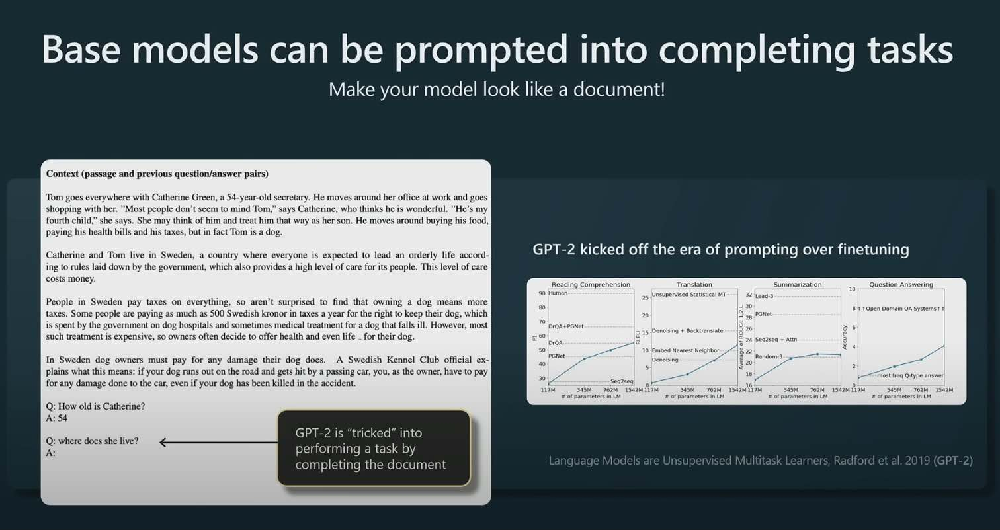
I wasn’t following the literature back then in the era of GPT-2 but it’s interesting to see the different types of prompts that people were trying to get base models to behave like assistants. With ChatGPT now, these types of prompts are not as useful.

I didn’t realize that these datasets took so much effort to create. A lot of times these contractors are writing long form answers to questions, adhering to very complex labeling instructions to be “helpful, truthful, harmless” taking sometimes hours to write these!
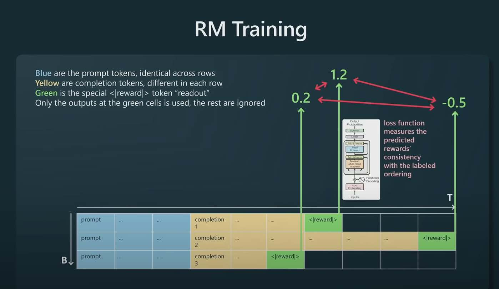
Binary classification between prompt and completion pairs. The completion yellow tokens are coming from the SFT model. Only supervise the training of the Transformer at the green reward token. The transformer will learn to predict the reward token for a given prompt/completion pair. We have the ground truth rewards from our human labelers. As the model is trained it can then better predict the reward tokens.
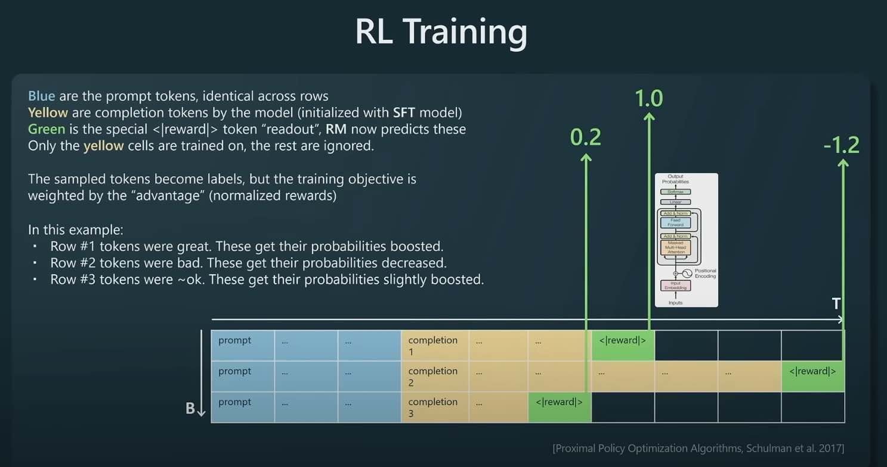
Taking the reward model from the previous stage, we take the tuples of (prompt, completion, reward), the completions are coming from the SFT model (model we want to train), the reward is from the reward model. The rewards are fixed.
We train on the yellow tokens and weigh the language model object by the reward. For example, in the first row, the reward is high so we increase the probabilities of those words appearing.
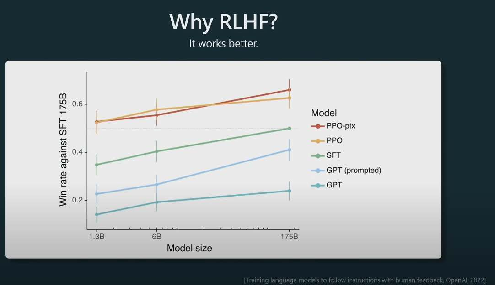
The difference between SFT (supervised fine tuning) and RLHF (reinforcement learning human feedback) LLMs. It’s interesting that the InstructGPT paper showed that humans prefer RLHF models to SFT models.
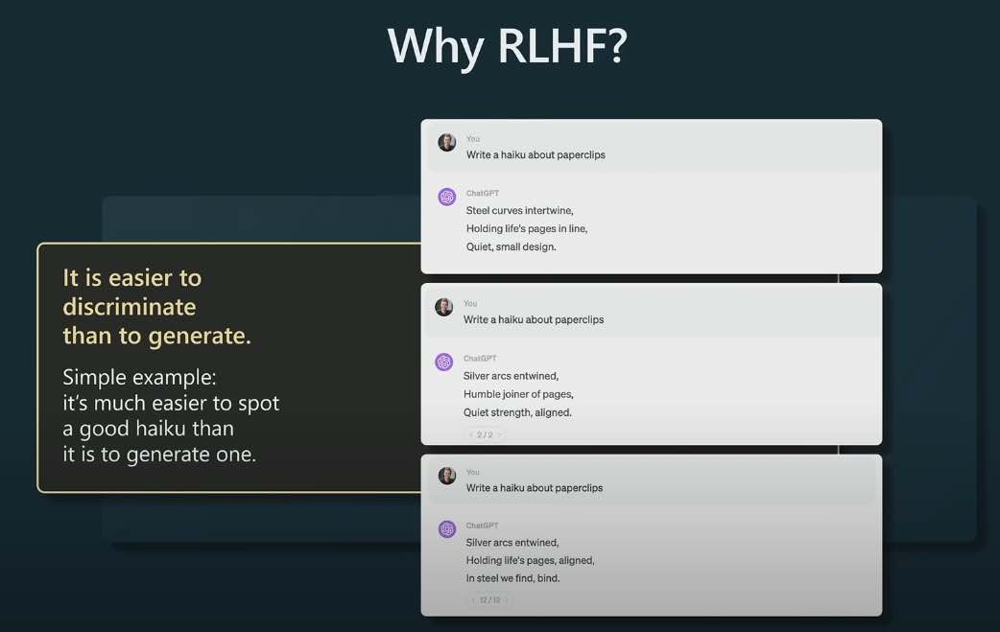
Why does RLHF work better than SFT? Karpathy offers up an interesting hypothesis basically saying that it is easier for humans to compare two completions (what one does when creating training data for the reward model) vs. creating a completion from scratch (what one does when creating training data for the SFT model). The example being if the prompt is “Write a haiku about paperclips” - it’s much easier to compare two haikus about paper clips than to write a haiku about paper clips from scratch.
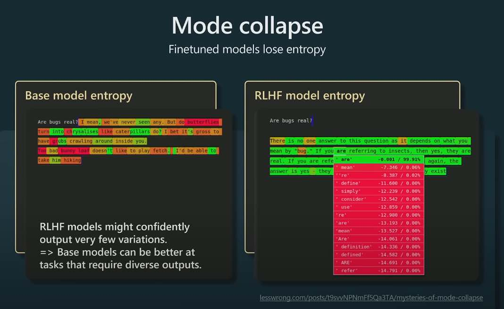
One downside of fine-tuned models I didn’t realize was they lose entropy, in other words fine-tune models often predict one token with high probability instead of a nice distribution of tokens. So base models can be better at tasks where you have N examples of things want to generate more things. Karpathy’s toy example was prompting with “Here are 100 cool pokemon names I made up:” and giving it 7 actual Pokemon and the base model completes with additional generated Pokemon names.
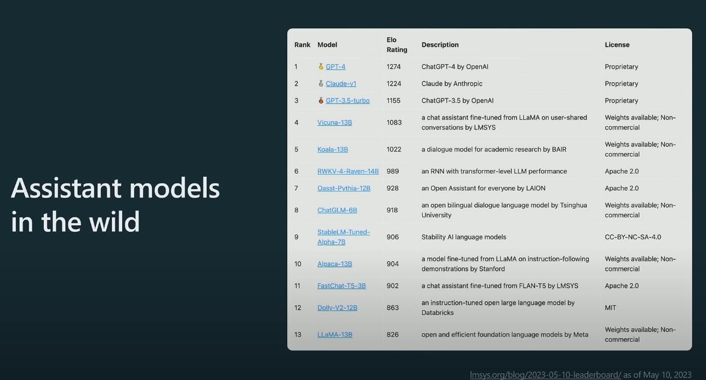
A team at Berkeley has assembled Elo ratings from some assistant LLMs. The first 3 are RLHF models, the rest of SFT models. GPT-4 is winning. A link to a more up-to-date version of the leaderboard with Google’s PaLM2: https://lmsys.org/blog/2023-05-25-leaderboard/ which is still pretty far between GPT3.5 and GPT-4.
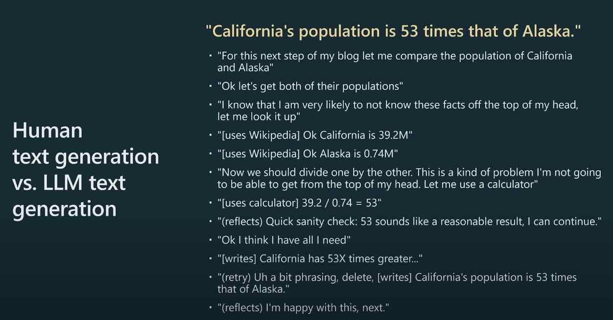 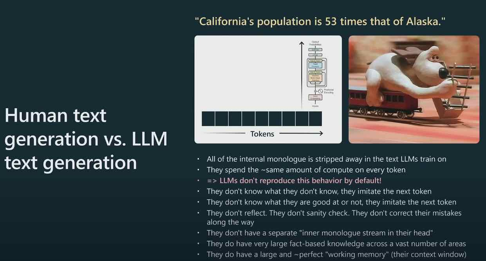
- All of the internal monologue is stripped away in the text LLMs train on
- They spend the ~same amount of compute on every token => LLMs don’t reproduce this behavior by default!
- They don’t know what they don’t know, they imitate the next token
- They don’t know what they are good at or not, they imitate the next token They don’t reflect. They don’t sanity check. They don’t correct their mistakes along the way
- They don’t have a separate “inner monologue stream in their head”
- They do have very large fact-based knowledge across a vast number of areas
- They do have a large and ~perfect “working memory” (their context window)
Prompting is a way of making of for the cognitive difference between these two architectures (human brains vs. LLMs).
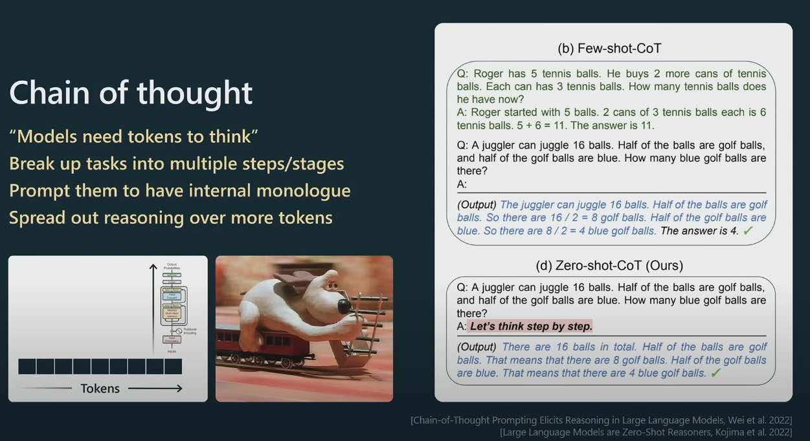
Models need tokens to think. By breaking up a task into multiple steps, you are giving the language model an opportunity to think and reason over more tokens.
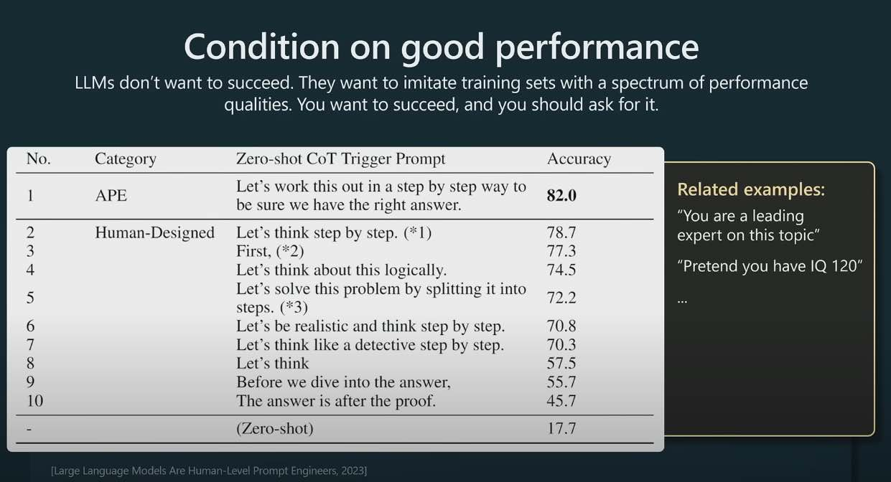
Because language models are trained on all kinds of data, e.g. student solutions to a physics problem or an expert solution to the same problem, you can prompt the model “to be an expert in physics” and that usually improves performance. Apparently the best prompt was “Let’s work this out in a step by step way to be sure we have the right answer.”
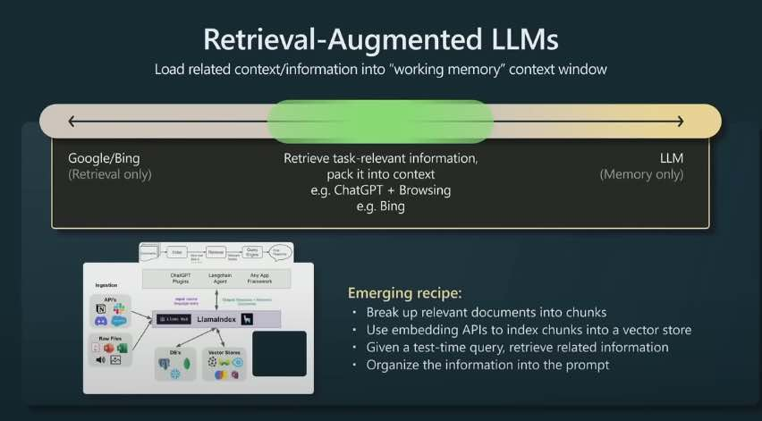
- Break up relevant documents into chunks
- Use embedding APIs to index chunks into a vector store
- Given a test-time query, retrieve related information
- Organize the information into the prompt
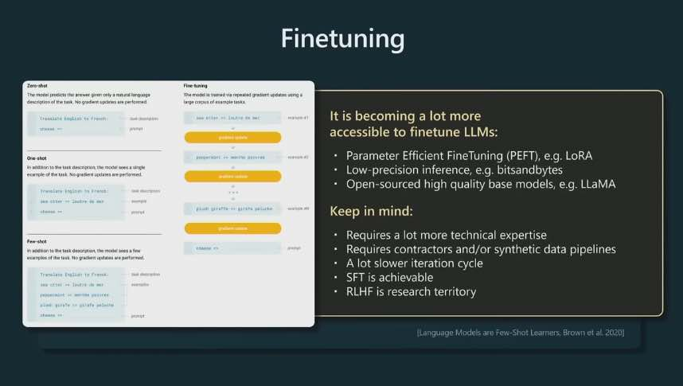
Become more accessible to fine-tuning a model:
- Parameter Efficient Finetuning, e.g. LoRA - only trainng small sparse pieces of your model
- Low-precision inference, e.g. bitsandbytes
- Open source high quality models like LLaMA

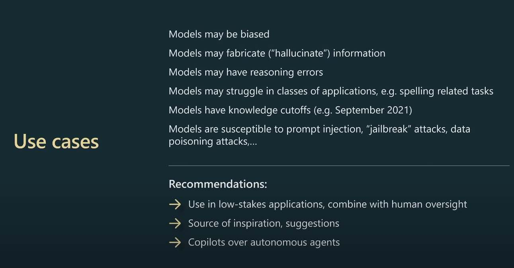